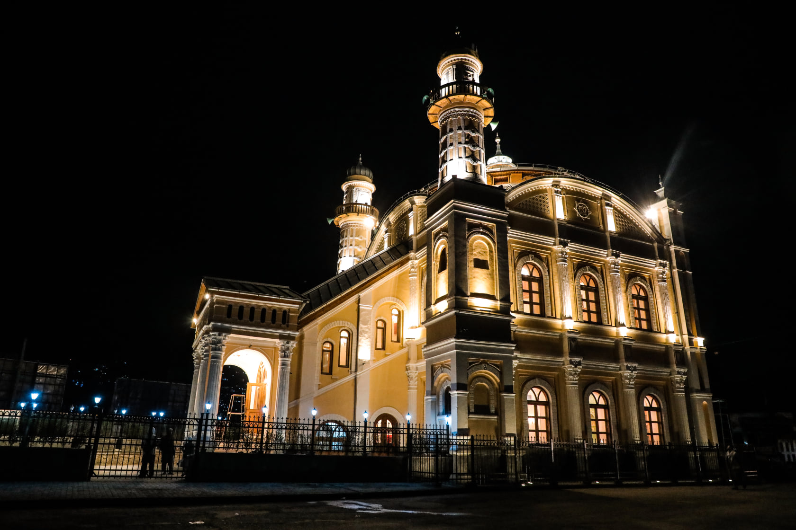
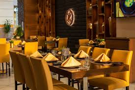
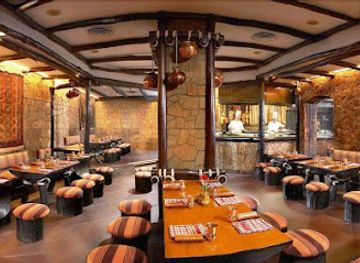
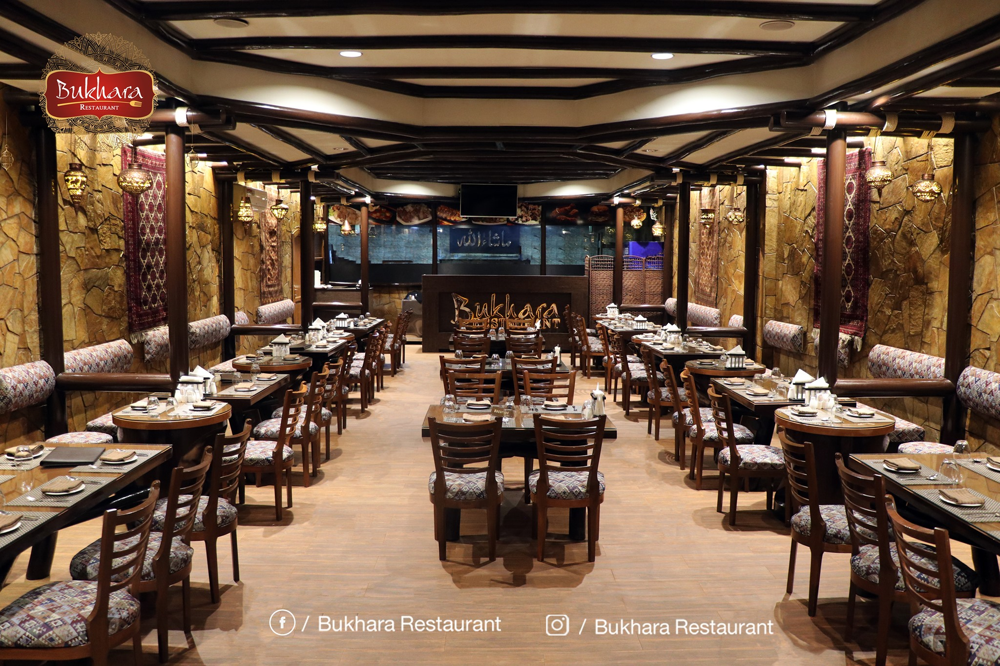

Why Kabul
Kabul; Heart of Afghanistan
Kabul is the capital and largest city of Afghanistan. Located in the eastern half of the country, it is also a municipality, forming part of the Kabul Province. The city is divided for administration into 22 municipal districts. A 2025 estimate puts the city's population at 7.175 million.
Kabul is known for its historical gardens, bazaars, and palaces such as the Gardens of Babur, Darul Aman Palace and the Arg.
Restaurants
My favorite Restaurants in Kabul

Ziyafat Restaurant
The first restaurant, providing the best National and
International taste, in the heart of Kabul.
فضای داخلی ما با طراحی خاص و نمایش آثار قدیمی، شکلی از یک
موزیم زنده را به نمایش گذاشته و هر گوشه آن پر از داستان است.
Address:
City Mall , Kabul, Afghanistan
What I like about it
This is one of the best brunch spots in Kabul but if you go at any time of day there will be something delicious on the menu!

Shaam Kabul Restaurant
شام کابل، جایی فراتر از یک رستورانت! ✨ لحظاتی ناب و خاطرهانگیز را در رستورانت شام کابل تجربه کنید؛ جایی که عطر خوش چای مخصوص، طعم غذاهای لذیذ و فضای آرامبخش، شما را از شلوغی روزمره جدا میسازد. 🌿 فضای داخلی ما با طراحی خاص و نمایش آثار قدیمی، شکلی از یک موزیم زنده را به نمایش گذاشته و هر گوشه آن پر از داستان است.
Address:
Ahmad Zaher Rd Najeeb Zarab Market, Kabul, Afghanistan
What I like about it
This is one of the best brunch spots in Kabul but if you go at any time of day there will be something delicious on the menu!

Bukhara Restaurant
The first restaurant, providing the best National and International taste, Afghani, Continental, Chinese, Pakistani & Fast Food in the heart of Kabul.
Address:
Qowai Markaz, Opp. Security Forces Hospital, Beside to Maternity Hospital , Kabul, Afghanistan
What I like about it
This is one of the best brunch spots in Kabul but if you go at any time of day there will be something delicious on the menu!